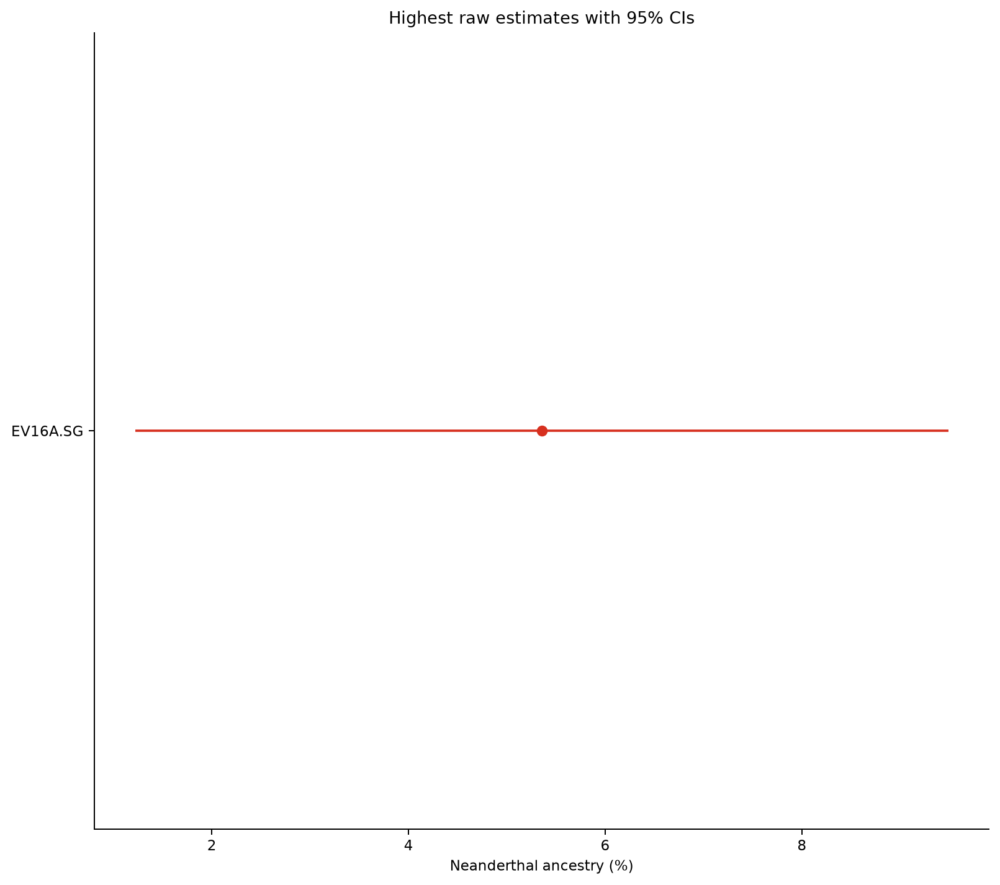

EV16A.SG
What the supplied numbers mean
2549 is the mean age in years BP. 5.35 is the Neanderthal f4-ratio percentage. +1.64 is the within-Etruscan residual z-score and +1.44 is the ancestry-and-geography-conditioned residual z-score. The two z-scores are not ancestry percentages, and neither reaches |z| = 2.
Robustness controls
| Test | Result | Interpretation |
|---|---|---|
| Standard f4-ratio | 5.3539% ± 2.1094 pp; 15,994 SNPs | Elevated, very wide interval |
| Block bootstrap (200) | Mean 5.3583%; 2.5–97.5%: 1.8596–9.4790% | Reproduces the wide uncertainty |
| Transversion-only | 6.9936% ± 3.9214 pp; 4,941 SNPs | No collapse, but extremely imprecise |
| Yoruba outgroup | 4.7346% | Same direction under alternate baseline |
| Swapped Altai/Vindija roles | 6.5032% | Same direction; reference range 1.77 pp |
| Leave-one-chromosome-out | 4.3090–6.1315% | No single chromosome explains the result |
| Maximum block influence | 0.7211 pp; block 5 | No one block explains the full estimate |
| Denisovan affinity | D 0.005626 ± 0.025991; Z 0.216 | No unusual Denisovan affinity |

Population context
EV16A is first by raw point estimate among 75 Etruscan-context individuals and 74th among 17,143 retained ancient samples (99.57th percentile). Those are raw ranks, not credibility-aware ranks: noisy low-information samples are overrepresented at both extremes.
Why the classification is low confidence
- 15,994 informative SNPs versus the pipeline's 200,000-SNP high-confidence floor.
- An 8.27-percentage-point-wide 95% interval.
- No contamination or damage covariates available for this unknown-sex sample.
- No validated EV16A archaic-segment call.
- Packed EIGENSTRAT genotypes cannot support terminal trimming or mapping/base-quality re-filtering.
Best next step
Use the deposited reads from ENA:PRJEB77116 for terminal trimming, mapping/base-quality filtering, contamination-aware checks, and a validated archaic-segment caller. A second extract or library would be especially valuable for replication.
Files and reproducibility
The machine-readable outputs are all_sample_archaic_estimates.tsv and top_candidate_sensitivity_tests.tsv. The run manifest records the fixed seed (20260714), configuration, and input digest. The full narrative is also available as Markdown.
.\.venv\Scripts\python.exe -m archaic.highest_archaic ` --aadr-data PATH\TO\AADR ` --metadata results\phase4_1240k_global_analysis.csv ` --excluded results\phase2_1240k_global_excluded.csv ` --config configs\highest_archaic.yaml ` --output results\individual_EV16A ` --subset EV16A.SG --resume
Source representation: Ravasini & Trombetta et al., Genome Biology (2024), doi:10.1186/s13059-024-03430-4. This report interprets pipeline output; it does not add a new calibrated Denisovan model or a segment caller.